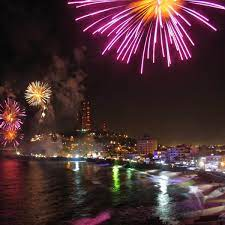
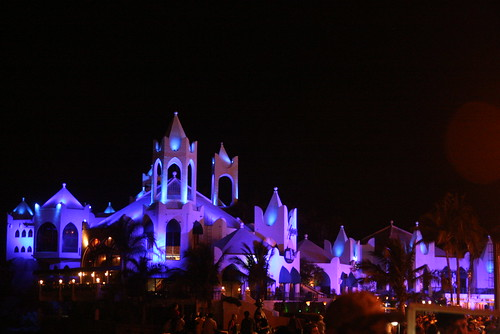

1. Dar un paseo por el Centro Histórico cuyos edificios tienen más de 180 años de antigüedad y recorre la Plaza Machado para disfrutar de sus jardines y quiosco.

2. Vive su Carnaval a finales de febrero, se trata de uno de los más importantes del país con más de 100 años de tradición.
3. Si eres de los desvelados que disfrutan de la vida nocturna, asiste a la disco Valentino’s, la más famosa de Mazatlán, con una propuesta musical variada.
